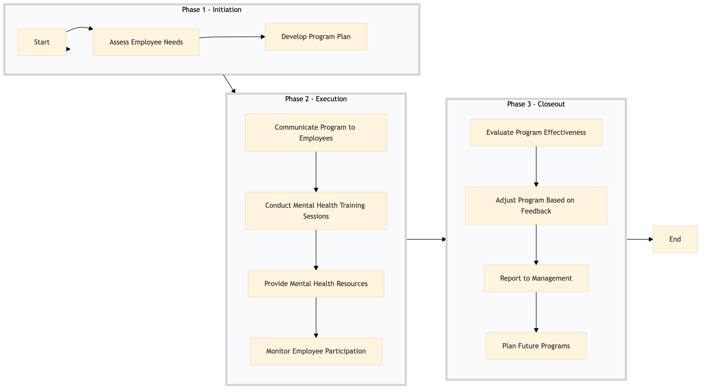

| Role | Steps |
|---|---|
| Human Resources Manager | 1.1 1.2 2.1 2.4 3.1 3.2 3.3 3.4 |
| Training Coordinator | 1.2 2.2 2.4 3.1 3.2 |
| HR Specialist | 2.3 2.4 3.1 |
| Step | Name | Role | System | Input | Output | KPI | Dec? | Exc? | Pain Point / Risk |
|---|---|---|---|---|---|---|---|---|---|
| 1.1 | Assess Employee Needs | Human Resources Manager | Oracle OPERA Cloud | Employee satisfaction survey data, HR records | Needs assessment report | Less than 2 weeks | N | Y | Handling sensitive employee feedback and ensuring confidentiality. |
| 1.2 | Develop Program Plan | Human Resources Manager, Training Coordinator | Oracle OPERA Cloud, Workday HCM | Needs assessment report | Program plan with activities and resources | Less than 1 week | N | Y | Aligning program goals with hotel operational priorities. |
| 2.1 | Communicate Program to Employees | Human Resources Manager, Training Coordinator | Oracle OPERA Cloud, Book4Time | Program plan | Communication materials and schedule | Less than 3 days | N | Y | Ensuring clear communication across all departments. |
| 2.2 | Conduct Mental Health Training Sessions | Training Coordinator, HR Specialist | Oracle OPERA Cloud, Book4Time | Program plan | Training session records and feedback | Less than 2 hours per session | N | Y | Managing logistics for multiple training sessions. |
| 2.3 | Provide Mental Health Resources | Human Resources Manager, HR Specialist | Oracle OPERA Cloud, Birchstreet Procurement | Program plan | Resource list and procurement orders | Less than 1 week | N | Y | Securing adequate mental health resources within budget constraints. |
| 2.4 | Monitor Employee Participation | Human Resources Manager, Training Coordinator | Oracle OPERA Cloud, Book4Time | Training session records and feedback | Participation report | Daily updates | N | Y | Tracking participation rates across different departments. |
| 3.1 | Evaluate Program Effectiveness | Human Resources Manager, Training Coordinator | Oracle OPERA Cloud, Workday HCM | Participation report, employee feedback | Program evaluation report | Less than 2 weeks | N | Y | Analyzing qualitative and quantitative data for meaningful insights. |
| 3.2 | Adjust Program Based on Feedback | Human Resources Manager, Training Coordinator | Oracle OPERA Cloud, Workday HCM | Program evaluation report | Updated program plan | Less than 1 week | N | Y | Implementing changes without disrupting ongoing operations. |
| 3.3 | Report to Management | Human Resources Manager, Training Coordinator | Oracle OPERA Cloud, Workday HCM | Program evaluation report | Management report | Less than 1 day | N | Y | Summarizing complex data for executive-level decision-making. |
| 3.4 | Plan Future Programs | Human Resources Manager, Training Coordinator | Oracle OPERA Cloud, Workday HCM | Management report | Future program plan | Less than 1 week | N | Y | Forecasting future needs and aligning with business goals. |
This process outlines the Employee Wellbeing & Mental Health Programme at a Marriott full-service hotel, focusing on HR initiatives to support staff mental health and overall wellbeing.